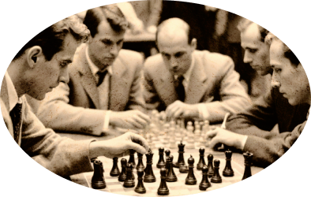

Чтобы поддержать Международный васюкинский турнир посетите лекцию на тему: «Плодотворная дебютная идея»

и Сеанс одновременной игры в шахматы на 160 досках гроссмейстера О. Бендера
Место проведения:
Дата и время мероприятия:
Стоимость входных билетов:
Плата за игру:
Взнос на телеграммы:
Клуб «Картонажник»
22 июня 1927 г. в 18:00
20 коп.
50 коп.
100 руб. 21 руб. 16 коп.
По всем вопросам обращаться в администрацию к К. Михельсону
Этапы преображения Васюков
Будущие источники обогащения васюкинцев
1
Строительство железнодорожной магистрали Москва-Васюки
2
Открытие фешенебельной гостиницы «Проходная пешка» и других небоскрёбов
3
Поднятие сельского хозяйства в радиусе на тысячу километров: производство овощей, фруктов, икры, шоколадных конфет
4
Строительство дворца для турнира
5
Размещение гаражей для гостевого автотранспорта
6
Постройка сверхмощной радиостанции для передачи всему миру сенсационных результатов
7
Создание аэропорта «Большие Васюки» с регулярным отправлением почтовых самолётов и дирижаблей во все концы света, включая Лос-Анжелос и Мельбурн

Хозе-Рауль Капабланка
Чемпион мира по шахматам
Эммануил Ласкер
Чемпион мира по шахматам
Александр Алехин
Чемпион мира по шахматам
Арон Нимцович
Чемпион мира по шахматам
Рихард Рети
Чемпион мира по шахматам
Остап Бендер
Гроссмейстер